01 Fractals: escape-time & IFS 32
Zoom forever, find the same shape. Iterate z → z² + c and color by how fast it runs away (escape-time), or recursively copy-shrink a shape (IFS).
Mandelbrot, Julia, Burning Ship, Newton, Sierpinski, Menger, Apollonian/Kleinian gaskets. · list
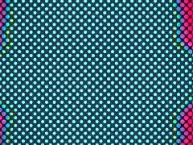
acid-fractal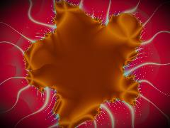
acid-fractals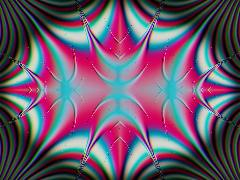
acidic-fractal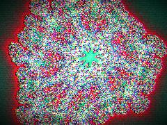
acidic-neon-fractal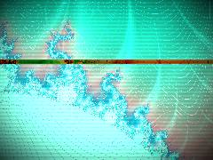
candy-glitch-mandelbrot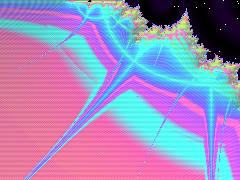
CandyMandelbrot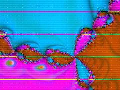
colorful-fractal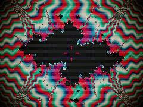
colorful-fractals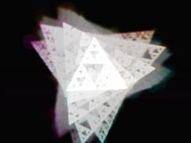
colorful-sierpinski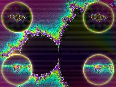
fractal-friday-mandelbrot_20260626_155624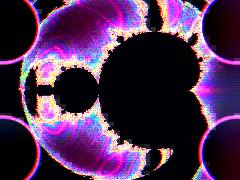
fractal-friday_20260626_154045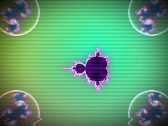
fractal-friday_20260626_154345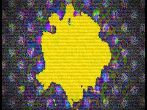
fractaldance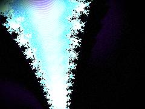
mandelbrot-candy-glitch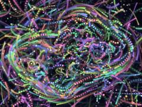
math-choreography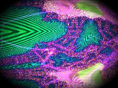
menger-burn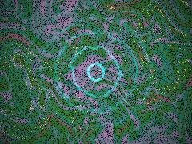
mondayafternoon_20260615_135022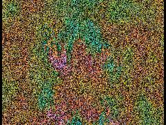
mondayafternoon_20260615_135818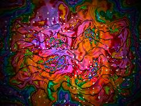
mondayafternoon_20260615_140917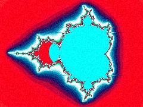
neon-acid-fractal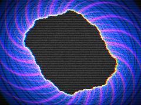
neon-julia-bloom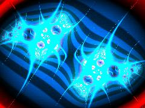
neon-julia-morph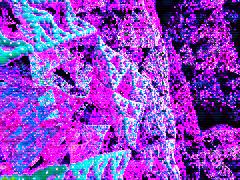
neon-sierpinski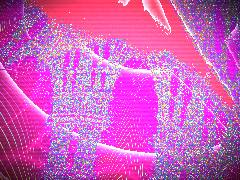
neon_menger_ship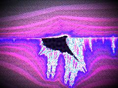
NeonBurningShip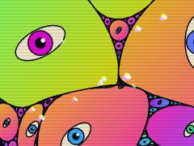
rainbow-gasket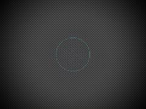
rainbow-kleinian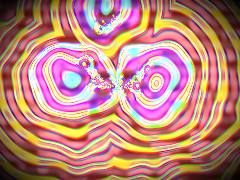
rainbow-math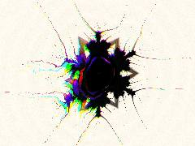
rainbow-math_20260614_184305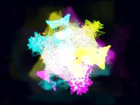
sierpinski-gasket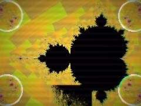
spectral-mandelbrot-portal_20260626_155150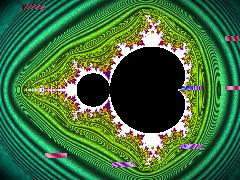
spectral_mandelbrot02 Reaction-diffusion & Turing patterns 31
Two chemicals: one makes more of itself, one eats it, and they spread at different speeds. That imbalance self-organizes into leopard spots and fingerprints.
Gray-Scott, Turing morphogenesis, Belousov-Zhabotinsky: spots, worms, labyrinths, coral. · list
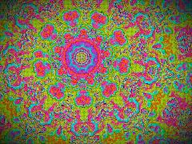
acidic-palette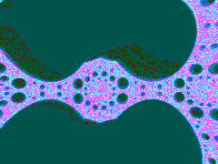
amazing_20260618_111501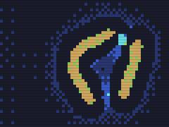
bright-automata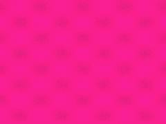
chroma-diffusion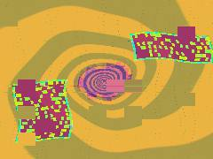
chroma_codec_shrine_20260618_191140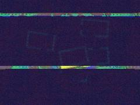
chroma_codec_shrine_20260618_192031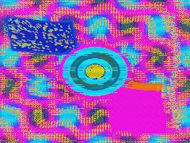
chromacodec_shrine_20260618_184444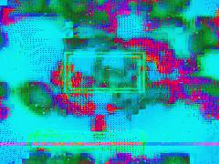
chromatophore_codec_shrine_20260618_185338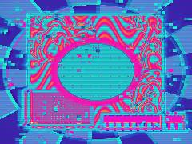
chromatophore_codec_shrine_20260618_190133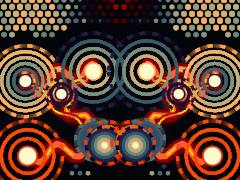
dreamtime-repo_20260615_222908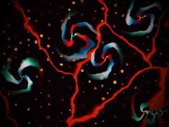
dreamtime-repo_20260615_224341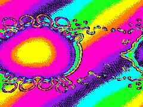
dynamic-interactive-design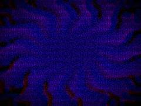
dynamic-rd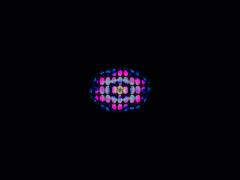
github-interactive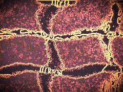
interactive-designlorenz_gray_scott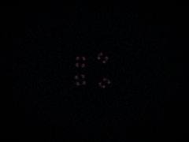
morphogenetic_attractor_20260809_090159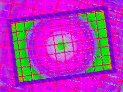
radshit_20260619_112936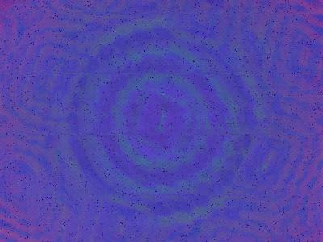
radshit_20260619_114812rd-lace-samplerretro-diffusion_20260618_094401retro-diffusion_20260618_095345retromorph_20260618_092028vhs-coralvibrant-diffusionvibrant-rdvibrant_rdvivid-diffusionvivid-rdwild-diffusionwild_diffusion03 Cellular automata, Lenia & sandpiles 23
Every pixel is a cell that looks at its neighbors and follows a rule. Tiny rules, emergent creatures. Sandpiles: grains pile up until they topple in avalanches.
Game-of-Life-likes, continuous CA (Lenia), cyclic CA, Abelian sandpiles, WFC-ish grids. · list
04 Agent systems: slime mold, mycelium, flocking 23
Thousands of dumb little walkers leave trails and follow each other's scent. Together they draw networks that look alive.
Physarum trail agents, hyphal tip growth & anastomosis, boids/murmurations. · list
05 Noise, flow & fluid fields 20
Smooth random hills stacked at many scales (fBm), then use one noise field to bend the coordinates of another (domain warping) = marble, smoke, liquid.
fBm / Perlin / simplex noise, domain warping, curl-noise advection, Voronoi-ish 'substances'. · list
06 Tilings, Voronoi & weaving 15
Carve the plane into cells (nearest-seed = Voronoi) or interlock repeating tiles and threads. Computational geometry meets the loom.
Voronoi/Worley cells, foams, Islamic/girih tilings, warp-and-weft textiles, ikat, jacquard. · list
07 Quasicrystals & aperiodic order 20
Ordered but never repeating. Add up waves pointing in 5+ directions and you get a pattern with forbidden symmetry—the math of Penrose tiles.
Sums of N plane waves (5-, 7-, 8-, 12-fold), Penrose / Ammann-Beenker, cut-and-project from 5D. · list
08 Waves, interference & moiré 23
Overlay two almost-identical patterns and a third, ghost pattern appears in the mismatch. Same physics as sound beats and vibrating sand plates.
Moiré gratings, beat frequencies, Chladni/cymatics plates, LED-subpixel interference, ripples. · list
09 Symmetry, kaleidoscopes & sacred geometry 12
Fold space like paper: mirror it N times around a point and anything you draw becomes a mandala. Group theory, but make it stained glass.
Dihedral folds, wallpaper/space groups, mandalas, Flower of Life, sigil glass. · list
10 Raymarched 3D: SDFs & gyroids 27
Shoot a ray per pixel and step forward by 'how far is the nearest surface?' until you hit something. Gyroids = infinite soap-film sponges.
Signed-distance-field raymarching, gyroids & triply-periodic minimal surfaces, glass/caustic shading. · list
11 Hyperbolic, non-Euclidean & higher-dimensional 23
Geometry where parallel lines diverge and space has more room than it should—Escher's Circle Limit. Plus shadows of shapes from 4+ dimensions.
Poincaré disk {7,3} tilings, Möbius transforms, Schottky groups, 4D/11D projections, G2 holonomy. · list
12 Chaos, attractors & time dynamics 12
Deterministic systems so sensitive they look random, orbiting a 'strange attractor'. Also: pieces that play tricks with time (effects before causes).
Clifford / de Jong / Lorenz attractors, retrocausal & desync loops, predictive temporal feedback. · list
13 Optics, spectra & color science 28
Physics of light: soap-bubble rainbows (thin-film interference), prisms splitting wavelengths, and perceptual color spaces that keep neon from going muddy.
Thin-film iridescence, birefringence, dispersion/prisms, CIE spectral color, OKLab/OKLCh color math. · list
14 Visual perception: stereograms, phosphenes & illusions 23
Art that hacks the visual system: hidden 3D you cross your eyes for, the shapes you see with eyes closed (mapped the way V1 maps them), illusory contours.
SIRDS/autostereograms, wiggle stereo, chromadepth, phosphenes & retinotopic log-polar maps, Kanizsa illusions. · list
15 Signal processing & media decay: VHS, CRT, glitch 78
Simulates how analog and digital signals break: tape wobble, sync loss, compression blocks. Signal processing run in reverse for beauty.
VHS tracking/head-switch, CRT phosphor & subpixels, scanlines, datamosh, macroblocks, packet loss. · list
16 Dithering, halftone & print 11
Faking many colors with few: arrange dots of limited inks in clever grids (dither, halftone) so your eye blends them.
Bayer / ordered dithering, halftone dots, Risograph & CMY(K) misregistration, palette quantization. · list
17 Typography, text & glyph systems 5
Letters as material: words with gravity, bubble glyphs, text stamped into fields.
Kinetic type physics, SDF glyphs, text-texture shaders, character-grid art. · list
18 Biomimicry: reefs, colonies & living systems 11
Math borrowed from organisms: golden-angle sunflower spirals, radial radiolarians, glowing coral colonies.
Phosphor reefs, volvox colonies, Haeckel radial forms, phyllotaxis (137.5°), bioluminescence. · list
19 Symbolic systems: tarot, I Ching, zodiac 10
Divination decks are finite combinatorial systems (64 hexagrams = 6 bits). These pieces turn those symbol sets into generative structure.
64-hexagram I Ching fields, tarot card engines, zodiac sigils, gematria—combinatorics as visual systems. · list